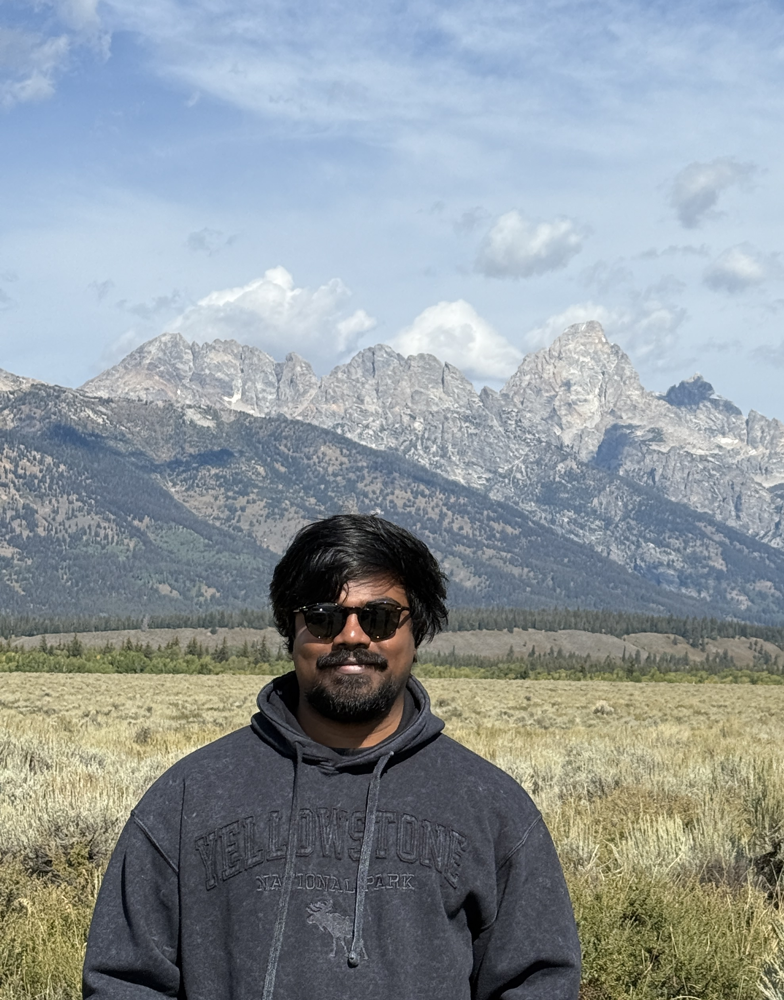

Teja Bogireddy
— Mūlamadhyamakakārikā 24:18

bogireddyteja @ uchicago.edu
News
March 2026: Our paper CoVR-R: Reason-Aware Composed Video Retrieval is accepted at CVPR Findings 2026.
February 2026: Ranked 2nd in the CL4Health @ LREC 2026 Shared Task on Evidence-Grounded Clinical QA from Electronic Health Records.
November 2025: Received the AEIC Achievement Award for developing POSEIDON, an AI-powered storm response tool.
August 2025: Our paper Time-Series Clustering: A Comprehensive Study is published at VLDB 2025.
July 2025: Ranked 2nd in BioNLP @ ACL 2025 Shared Task on Evidence-Grounded Clinical QA.
February 2025: Invited speaker at the AAAI Workshop on Urban Planning, presenting research on Longitudinal Tabular Transformers for Estimated Time to Restoration.